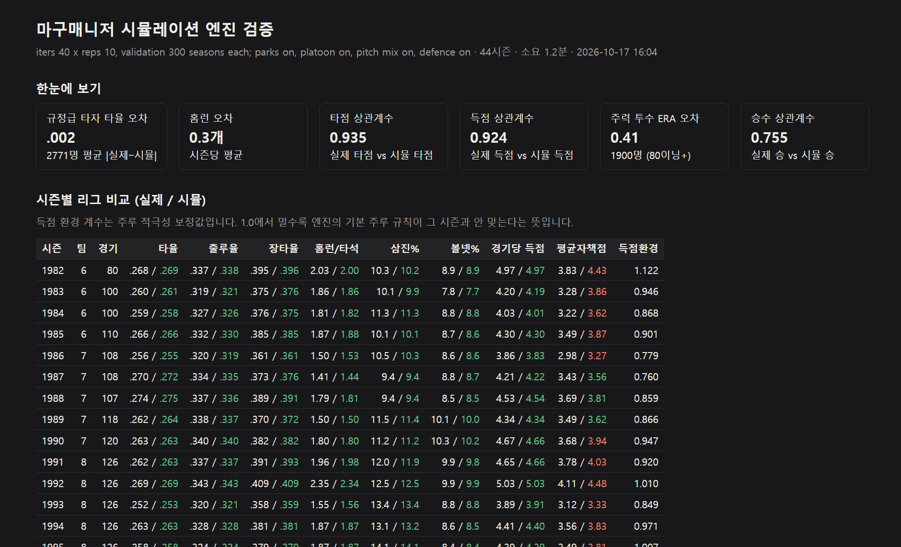

← 프로젝트 목록
경기 엔진 검증: 실제 KBO 시즌과 시뮬레이션의 시즌별 비교(2026-10-17 측정)
마구매니저 부활 프로젝트
서비스가 종료돼 앱만 남은 모바일 야구 매니지먼트 게임 '마구매니저'(넷마블)를 AI 코딩 에이전트와 함께 복원하고, 원작에 없던 콘텐츠까지 기획해 한 달 동안 59개 버전을 냈습니다.
공개 범위
- 배포와 상업 이용이 없는 개인 프로젝트입니다.
- 원작 앱은 디컴파일해 통신 규격과 화면 규칙을 분석했고, 서버와 함께 사라진 부분을 새로 만들었습니다. 원작의 코드·그림·데이터는 권리자의 것이라 공개 저장소에 넣지 않았습니다.
- 공개 저장소는 직접 만든 코드와 기획 문서만 골라 옮긴 편집본입니다. 전체 작업은 비공개로 보관하고 있으며, 요청하시면 실제 플레이와 함께 보여 드릴 수 있습니다.
- 59개APK 버전 (10-19 → 11-20)
- 107종게임 서버가 처리하는 요청
- .002주전 타자 타율 오차 (KBO 44시즌)
- 0.4180이닝 이상 투수 평균자책점 평균 오차
- 3.9만 줄게임 서버 (C# .NET 8)
- 1.5만 줄경기 엔진
- 2.2만 줄앱에 새로 쓴 코드 (Unity 6.3)
- 6명실제 화면을 플레이하는 AI 테스터
배경
학창 시절 가장 오래 붙잡은 게임이었습니다. 서비스가 끝나자 경기 결과와 보상 규칙을 가진 서버가 사라졌고, 앱은 시작 화면에서 멈췄습니다. 원작은 32비트라 최신 휴대폰에서는 실행조차 되지 않았습니다. 남은 것은 앱 하나와 제 기억이었습니다.
무엇을 했나
복원
원작 앱 코드를 분석해 요청 패킷 321종과 화면 규칙을 정리하고, 사라진 것(서버 규칙·데이터 표·이미지)과 남은 것을 나눴습니다. Unity 6.3 64비트로 이식해 최신 휴대폰에서 다시 실행되게 했습니다.
개발
게임 서버(로그인·로스터·리그·카드·경제·코칭스태프), 타석 단위 경기 엔진과 타구 물리 기반 수비 엔진, 공개 기록으로 카드 능력치를 만드는 도구를 새로 만들었습니다.
새 콘텐츠
FA 선수카드와 에이전트 협상, 계약서 서명·입단식 연출, 레전드 카드와 레전드 리그, 시즌마다 바뀌는 공인구, 7단계 리그처럼 원작에 없던 콘텐츠를 기획했습니다.
기획 방식
- 기억을 명세로 — 사라진 규칙은 AI가 번호를 붙인 질문으로 제 기억을 끌어내고, 제가 고른 값을 설계 노트로 고정했습니다.
- 밸런스는 숫자로 — 아이콘만 남은 팀 특성 트리를 기억으로 복원한 뒤(타자·투수 특성 30개), 같은 전력의 팀끼리 맞붙이는 시뮬레이션(초당 약 26만 경기)으로 특성 1점의 승률 기여도를 재서 값을 정했습니다.
- 실제 기록으로 검증 — 1982~2025 KBO 44시즌을 재현하며 선수 능력치를 보정했습니다. 경기 엔진은 구장·시대·좌우·구종을 반영합니다.
- 유저 시점으로 점검 — 성향이 다른 AI 테스터 6명이 창 없는 게임 클라이언트를 글로 읽고 눌러 플레이하고 리뷰를 남깁니다. 쿠폰 없이 자급자족하는 테스터로 콘텐츠 소모 속도를 잽니다.
- 기획을 돌아보기 — 제가 입력한 기획 원문과 고른 선택지, 그 결과를 시간순으로 모두 기록해(약 46만 자) 결정이 옳았는지 돌아봅니다.

기획 이력
| 주 | 기획과 결정 | APK |
|---|---|---|
| 10-15 ~ 10-18 | 원작 앱을 분석해 사라진 것과 남은 것을 나눔. 경기 엔진을 실제 KBO 44시즌으로 검증. 팀 특성 트리를 기억으로 복원하고 시뮬레이션으로 값을 정함 | — |
| 10-19 ~ 10-25 | 첫 APK로 휴대폰에서 다시 실행(10-19). 오늘의 미션·업적, 정규시즌 시상, 특별수강과 공통 리그 일정, 투수 포지션 변경, 트레이닝북 교환소 | 1.0.1 ~ 1.0.15 |
| 10-26 ~ 11-01 | 상위 리그 '챔피언스 리그'. 수비 엔진을 타구 물리·수비 범위·송구로 다시 설계해 적용하고, 실제 수비 기록으로 맞춤 | 1.0.16 ~ 1.0.27 |
| 11-02 ~ 11-08 | 공개 기록으로 1993~2026 카드 능력치를 다시 산출. 새벽 자동 시범경기. 능력치의 의미를 설계대로 다시 매김. 레전드 카드와 6단계 '레전드 리그' | 1.0.28 ~ 1.0.35 |
| 11-09 ~ 11-15 | AI 테스터의 실제 화면 플레이와 리뷰. 팀 가치 평가와 자동 편성·특성 추천. 자급자족 테스터로 소모 속도 측정. 7단계 리그와 MP 장부. FA 선수카드, 공인구와 득점 환경 | 1.0.36 ~ 1.0.53 |
| 11-16 ~ 11-20 | FA 에이전트 협상·재계약 협상, 계약서 서명과 입단식 연출. 모든 글상자를 넘침 검사하는 규칙. 정규시즌 결산 시상대 | 1.0.54 ~ 1.0.59 |
AI와 일한 방식
- 두 세션 분업 — '엔진(경기 시뮬레이션·3D 중계)'과 '시스템(서버 기능·경제·버그 수정)'으로 나눠 동시에 운영했습니다. 파일 소유권을 나누고, 공유 파일은 덧붙이는 수정만 허용했습니다.
- 사고에서 규칙으로 — 시뮬레이션 6개를 동시에 돌려 PC가 멈춘 뒤 "한 번에 하나, 코어 2개 비우기", 빌드 중 버그를 찾으면 바로 취소하고 고친 뒤 다시 빌드하기처럼, 문제마다 원인을 한 줄 규칙으로 남겼습니다.
- 기록이 맥락을 잇는다 — 결정과 이유는 장기 메모리 노트(93개)에, 빌드 전에는 릴리즈 이력에 바뀐 점과 버그 원인을 적어 세션이 바뀌어도 같은 맥락에서 시작했습니다.
- 사람의 몫 — 기획, 선택지 중 결정, 실제 선수 기록 수집, 휴대폰 실사용 검수, 빌드와 서버 재시작 승인.